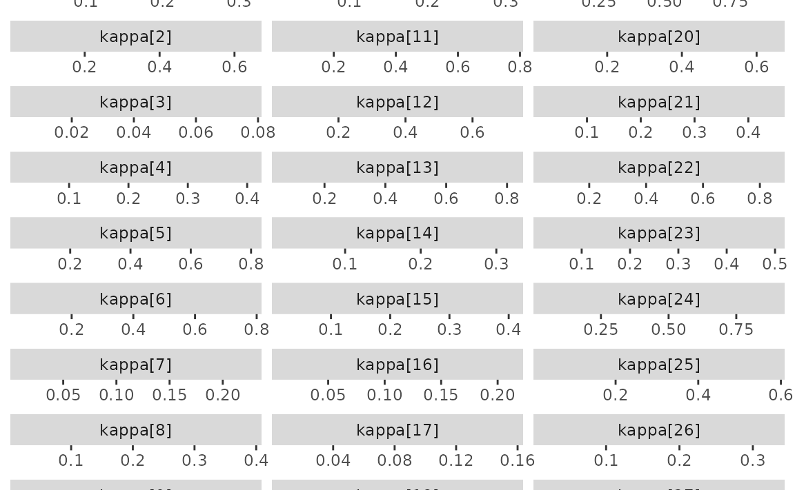

etf <- etf_vix[1:55, 1:3]
# Split-------------------------------
h <- 5
etf_eval <- divide_ts(etf, h)
etf_train <- etf_eval$train
etf_test <- etf_eval$testBayesian VAR and VHAR
var_bayes() and vhar_bayes() fit BVAR and
BVHAR each with various priors.
-
y: Multivariate time series data. It should be data frame or matrix, which means that every column is numeric. Each column indicates variable, i.e. it sould be wide format. -
porhar: VAR lag, or order of VHAR -
num_chains: Number of chains- If OpenMP is enabled, parallel loop will be run.
-
num_iter: Total number of iterations -
num_burn: Number of burn-in -
thinning: Thinning -
coef_spec: Coefficient prior specification.- Minneosta prior
- BVAR:
set_bvar() - BVHAR:
set_bvhar()andset_weight_bvhar() - Can induce prior on
using
lambda = set_lambda()
- BVAR:
- SSVS prior:
set_ssvs() - Horseshoe prior:
set_horseshoe() - NG prior:
set_ng() - DL prior:
set_dl()
- Minneosta prior
-
contem_spec: Contemporaneous prior specification. -
cov_spec: Covariance prior specification. Useset_ldlt()for homoskedastic model. -
include_mean = TRUE: By default, you include the constant term in the model. -
minnesota = c("no", "short", "longrun"): Minnesota-type shrinkage. -
verbose = FALSE: Progress bar -
num_thread: Number of thread for OpenMP- Used in parallel multi-chain loop
- This option is valid only when OpenMP in user’s machine.
Stochastic Search Variable Selection (SSVS) Prior
(fit_ssvs <- vhar_bayes(etf_train, num_chains = 1, num_iter = 20, coef_spec = set_ssvs(), contem_spec = set_ssvs(), cov_spec = set_ldlt(), include_mean = FALSE, minnesota = "longrun"))
#> Call:
#> vhar_bayes(y = etf_train, num_chains = 1, num_iter = 20, coef_spec = set_ssvs(),
#> contem_spec = set_ssvs(), cov_spec = set_ldlt(), include_mean = FALSE,
#> minnesota = "longrun")
#>
#> BVHAR with SSVS prior + SSVS prior
#> Fitted by Gibbs sampling
#> Total number of iteration: 20
#> Number of burn-in: 10
#> ====================================================
#>
#> Parameter Record:
#> # A draws_df: 10 iterations, 1 chains, and 90 variables
#> phi[1] phi[2] phi[3] phi[4] phi[5] phi[6] phi[7] phi[8]
#> 1 0.1246 0.20256 -0.1602 -0.0399 -0.1411 -0.29451 0.665 0.1730
#> 2 0.0856 -0.08727 0.0496 -1.0544 -0.4975 -0.51124 0.604 0.2871
#> 3 0.1175 0.39026 -0.3997 -0.4904 -0.3764 0.06033 1.088 0.8538
#> 4 0.0203 0.03856 -0.0671 0.9171 -0.1068 -0.00241 -0.472 -0.6475
#> 5 -0.0957 -0.00745 0.0141 0.2069 -0.2324 -0.41881 0.135 -0.1364
#> 6 0.1214 0.11141 -0.2002 0.3122 0.0921 0.18845 -0.102 0.0825
#> 7 0.2038 0.04463 0.1374 -0.7403 -0.1705 -0.35122 0.619 1.0751
#> 8 0.0538 0.07403 -0.2746 0.7689 -0.1186 0.24863 -0.447 0.2596
#> 9 -0.0406 0.29739 0.0952 -1.6632 -0.5382 -0.56066 1.892 1.5085
#> 10 0.1080 -0.20321 0.0999 -0.7670 -0.0239 -0.55164 1.051 0.9027
#> # ... with 82 more variables
#> # ... hidden reserved variables {'.chain', '.iteration', '.draw'}autoplot() for the fit (bvharsp object)
provides coefficients heatmap. There is type argument, and
the default type = "coef" draws the heatmap.
autoplot(fit_ssvs)
Horseshoe Prior
coef_spec is the initial specification by
set_horseshoe(). Others are the same.
(fit_hs <- vhar_bayes(etf_train, num_chains = 2, num_iter = 20, coef_spec = set_horseshoe(), contem_spec = set_horseshoe(), cov_spec = set_ldlt(), include_mean = FALSE, minnesota = "longrun"))
#> Call:
#> vhar_bayes(y = etf_train, num_chains = 2, num_iter = 20, coef_spec = set_horseshoe(),
#> contem_spec = set_horseshoe(), cov_spec = set_ldlt(), include_mean = FALSE,
#> minnesota = "longrun")
#>
#> BVHAR with Horseshoe prior + Horseshoe prior
#> Fitted by Gibbs sampling
#> Number of chains: 2
#> Total number of iteration: 20
#> Number of burn-in: 10
#> ====================================================
#>
#> Parameter Record:
#> # A draws_df: 10 iterations, 2 chains, and 124 variables
#> phi[1] phi[2] phi[3] phi[4] phi[5] phi[6] phi[7] phi[8]
#> 1 0.3921 -0.05268 -0.074338 -0.11920 0.00298 1.064 0.01377 -0.0978
#> 2 -0.0734 -0.02555 0.101854 0.24406 -0.01347 0.913 0.00776 -0.1232
#> 3 0.0614 -0.17056 -0.023383 0.35591 0.04498 1.018 0.01497 0.0443
#> 4 -0.0208 -0.21167 -0.082715 0.29275 -0.07747 0.972 -0.03674 -0.0063
#> 5 0.0240 -0.21473 -0.000909 0.20111 -0.00802 1.051 0.04101 -0.0720
#> 6 0.1186 -0.00447 0.021910 0.00658 0.05175 0.965 0.00444 -0.0121
#> 7 0.0783 -0.06972 0.037062 0.02262 0.02518 1.021 0.00290 0.0438
#> 8 0.0969 0.11061 -0.124958 0.06275 -0.01752 0.888 0.02658 -0.0398
#> 9 0.1117 -0.09341 0.125611 -0.02563 0.00331 0.734 -0.05327 0.0348
#> 10 0.1353 0.00398 0.311831 0.00282 -0.03792 0.849 -0.00370 -0.0233
#> # ... with 10 more draws, and 116 more variables
#> # ... hidden reserved variables {'.chain', '.iteration', '.draw'}
autoplot(fit_hs)
Minnesota Prior
(fit_mn <- vhar_bayes(etf_train, num_chains = 2, num_iter = 20, coef_spec = set_bvhar(lambda = set_lambda()), cov_spec = set_ldlt(), include_mean = FALSE, minnesota = "longrun"))
#> Call:
#> vhar_bayes(y = etf_train, num_chains = 2, num_iter = 20, coef_spec = set_bvhar(lambda = set_lambda()),
#> cov_spec = set_ldlt(), include_mean = FALSE, minnesota = "longrun")
#>
#> BVHAR with MN_Hierarchical prior + MN_Hierarchical prior
#> Fitted by Gibbs sampling
#> Number of chains: 2
#> Total number of iteration: 20
#> Number of burn-in: 10
#> ====================================================
#>
#> Parameter Record:
#> # A draws_df: 10 iterations, 2 chains, and 63 variables
#> phi[1] phi[2] phi[3] phi[4] phi[5] phi[6] phi[7] phi[8]
#> 1 0.4138 -0.0515 0.3069 -0.1077 0.4402 1.101 -0.1993 -0.0312
#> 2 0.3537 -0.2305 -0.0559 -0.1199 0.2445 0.917 0.0434 0.1963
#> 3 0.2705 -0.0465 0.0360 0.0420 0.1887 0.874 0.1031 -0.1930
#> 4 0.3118 -0.1969 -0.0404 0.0694 0.0781 0.823 0.1961 0.0728
#> 5 0.4405 0.0575 0.0506 0.0897 0.0893 0.801 0.1058 0.2704
#> 6 0.0848 -0.2301 0.1407 0.0722 0.1061 1.128 0.2398 0.2817
#> 7 0.1809 -0.0362 0.1832 0.1701 0.0527 1.200 0.3462 0.1840
#> 8 0.1078 -0.2035 0.2829 0.3574 -0.0320 1.036 0.1089 -0.0697
#> 9 0.1737 -0.0848 0.3013 0.2573 -0.0513 0.785 0.0675 0.1181
#> 10 0.2752 -0.1289 0.3415 -0.1696 0.0768 0.940 -0.4074 -0.0673
#> # ... with 10 more draws, and 55 more variables
#> # ... hidden reserved variables {'.chain', '.iteration', '.draw'}Normal-Gamma prior
(fit_ng <- vhar_bayes(etf_train, num_chains = 2, num_iter = 20, coef_spec = set_ng(), cov_spec = set_ldlt(), include_mean = FALSE, minnesota = "longrun"))
#> Call:
#> vhar_bayes(y = etf_train, num_chains = 2, num_iter = 20, coef_spec = set_ng(),
#> cov_spec = set_ldlt(), include_mean = FALSE, minnesota = "longrun")
#>
#> BVHAR with NG prior + NG prior
#> Fitted by Metropolis-within-Gibbs
#> Number of chains: 2
#> Total number of iteration: 20
#> Number of burn-in: 10
#> ====================================================
#>
#> Parameter Record:
#> # A draws_df: 10 iterations, 2 chains, and 97 variables
#> phi[1] phi[2] phi[3] phi[4] phi[5] phi[6] phi[7] phi[8]
#> 1 -0.0174 -0.1553 0.144 0.0206 -0.17653 0.105 0.280 7.59e-05
#> 2 0.0609 -0.1648 0.116 0.1234 0.09851 0.355 1.276 1.09e-04
#> 3 0.0601 -0.0281 0.107 0.6836 0.11787 0.329 1.025 1.18e-04
#> 4 0.1942 -0.0493 0.109 0.2376 0.01591 -0.105 0.816 3.30e-03
#> 5 -0.1677 -0.0718 0.124 0.0581 0.02961 0.817 0.393 8.96e-03
#> 6 0.2939 -0.1472 0.112 0.1716 0.16081 0.577 0.690 -7.27e-03
#> 7 0.0951 -0.1081 0.157 0.3563 0.22643 0.512 0.788 -2.35e-02
#> 8 0.0192 0.0252 0.396 -0.0830 0.03402 0.192 0.883 -4.25e-02
#> 9 0.0870 -0.1687 0.224 -0.1649 0.11070 0.317 1.337 1.97e-02
#> 10 0.0754 -0.1531 0.301 0.0207 -0.00271 0.174 0.842 -4.06e-02
#> # ... with 10 more draws, and 89 more variables
#> # ... hidden reserved variables {'.chain', '.iteration', '.draw'}Dirichlet-Laplace prior
(fit_dl <- vhar_bayes(etf_train, num_chains = 2, num_iter = 20, coef_spec = set_dl(), cov_spec = set_ldlt(), include_mean = FALSE, minnesota = "longrun"))
#> Call:
#> vhar_bayes(y = etf_train, num_chains = 2, num_iter = 20, coef_spec = set_dl(),
#> cov_spec = set_ldlt(), include_mean = FALSE, minnesota = "longrun")
#>
#> BVHAR with DL prior + DL prior
#> Fitted by Gibbs sampling
#> Number of chains: 2
#> Total number of iteration: 20
#> Number of burn-in: 10
#> ====================================================
#>
#> Parameter Record:
#> # A draws_df: 10 iterations, 2 chains, and 91 variables
#> phi[1] phi[2] phi[3] phi[4] phi[5] phi[6] phi[7]
#> 1 0.1265 -7.42e-04 0.229700 -0.03685 0.00379 1.023 0.09483
#> 2 0.2969 -6.77e-05 0.267984 -0.04788 0.01575 0.892 0.14783
#> 3 0.3211 -2.87e-04 0.061009 0.15042 0.07236 0.929 0.12545
#> 4 0.6038 -2.35e-02 0.055624 0.03182 0.24390 0.890 0.14750
#> 5 0.1682 5.49e-03 0.083656 0.05044 0.32651 0.971 0.28056
#> 6 -0.0813 1.15e-02 0.259276 0.08102 0.02230 0.938 -0.03120
#> 7 0.2164 5.34e-03 0.079894 0.35501 0.04436 0.957 -0.01114
#> 8 0.2066 4.07e-03 -0.003125 0.11486 0.21925 0.979 -0.00265
#> 9 0.0328 1.87e-04 -0.000436 -0.01424 0.03418 0.839 -0.00452
#> 10 0.0639 1.36e-04 -0.003721 -0.00596 -0.00668 0.859 -0.05257
#> phi[8]
#> 1 -1.58e-01
#> 2 -4.14e-02
#> 3 1.64e-02
#> 4 1.13e-02
#> 5 -1.62e-03
#> 6 -3.18e-03
#> 7 4.21e-03
#> 8 2.38e-04
#> 9 -2.06e-05
#> 10 -1.17e-02
#> # ... with 10 more draws, and 83 more variables
#> # ... hidden reserved variables {'.chain', '.iteration', '.draw'}Bayesian visualization
autoplot() also provides Bayesian visualization.
type = "trace" gives MCMC trace plot.
autoplot(fit_hs, type = "trace", regex_pars = "tau")
type = "dens" draws MCMC density plot. If specifying
additional argument facet_args = list(dir = "v") of
bayesplot, you can see plot as the same format with
coefficient matrix.
autoplot(fit_hs, type = "dens", regex_pars = "kappa", facet_args = list(dir = "v", nrow = nrow(fit_hs$coefficients)))